Guide de Lian : reine de l'enchantement dans Hero Wars Alliance
- Par : Alexandre Domingos. .
Bienvenue, Champion. As-tu déjà rêvé d'une héroïne capable de plonger toute l'équipe ennemie dans un profond sommeil, neutralisant même les adversaires les plus puissants avant qu'ils n'agissent ? Voici Lian, la reine enchanteresse du contrôle de foule dans Hero Wars Alliance. Cette sorcière hypnotique manie une magie qui endort les ennemis, inflige de redoutables dégâts purs et punit quiconque ose l'attaquer avec des effets de charme instantanés.
Mais la véritable puissance de Lian va bien au-delà de simples sorts de sommeil. Avec les reliques légendaires, elle obtient la redoutable compétence Fascination, qui charme à répétition les ennemis centraux, ainsi que Cœur brisé, qui inflige des dégâts purs bonus à chaque cible charmée lorsqu'elle est attaquée. Si tu veux une héroïne capable de neutraliser des équipes entières et de transformer le contrôle en pression offensive implacable, ce guide complet est pour toi.
Regardez la vidéo complète sur la Relique de Lian — Meilleur niveau d'amélioration à faible coût et synergies d'équipes ci-dessous. Le résumé technique et les tableaux de statistiques se trouvent juste après la vidéo.

▶ Regardez cette vidéo doublée sur YouTube
📋 Guide de Lian – Sommaire
Qui est Lian dans Hero Wars Alliance ?
Lian est une puissante héroïne Contrôle / Mage de la faction Voie du Mystère, placée en ligne arrière comme spécialiste ultime du contrôle de foule. Elle enchante les ennemis par un charme hypnotique, les endort et inflige des dégâts purs à ceux qui résistent. Son kit basé sur l'Intelligence en fait la pierre angulaire parfaite de toute composition d'équipe axée sur le contrôle.
- Classe principale : Contrôle
- Rôle principal : Contrôle de foule / Sommeil / Dégâts purs
- Position : ligne arrière
- Stat principale : Intelligence
- Faction : Voie du Mystère
- Comment obtenir des Pierres d'âme : Événements spéciaux, Coffre héroïque, Boutique de la Grande Arène
- Synergie : Satori, Amira, Folio, Miu
- Tier list Hydra : B
La fonction principale de Lian est de verrouiller toute l'équipe ennemie avec le sommeil grâce à son ultime Enchantement, tandis que Conciliation punit tout ennemi qui tente de lui infliger des dégâts. Sa mécanique unique, qui endort les ennemis sans que ses propres attaques ne les réveillent, ouvre des fenêtres dévastatrices pendant lesquelles son équipe peut infliger des dégâts sans opposition.
En tant qu'héroïne d'Intelligence, chaque point d'Intelligence lui donne trois points d'Attaque magique, un point de Défense magique et un point supplémentaire d'Attaque physique. Investir dans sa stat principale renforce presque toutes les compétences de son arsenal, ce qui lui permet d'excellemment évoluer en fin de partie.
Compétence de classe (Contrôle) : à la fin d'un effet de contrôle, Lian ralentit la même cible de 30 % et réduit tous ses dégâts physiques pendant 4,0 secondes. La réduction des dégâts est égale à 1 % de sa statistique d'attaque la plus élevée + 9,000 (jusqu'à 10,383 avec le Talisman du Charme). L'effet ne peut pas se déclencher sur une même cible plus d'une fois toutes les 10 secondes.
Avantages et inconvénients de Lian - Hero Wars Alliance
✅ Avantages
- Sommeil sur toute l'équipe : Enchantement charme TOUS les ennemis et les endort pendant 7,0 secondes, ce qui en fait l'un des ultimes de contrôle de foule les plus puissants du jeu.
- Dégâts purs élevés : Balle hypnotique inflige des dégâts purs qui ignorent l'Armure et la Défense magique, ce qui rend Lian efficace contre n'importe quelle composition défensive.
- Autodéfense par charme : Conciliation charme automatiquement les ennemis qui tentent de blesser Lian, ce qui lui donne une excellente survie pour une héroïne de ligne arrière.
- Pic de puissance légendaire : Fascination ajoute un charme de zone récurrent toutes les 14 secondes, et Cœur brisé inflige des dégâts purs bonus à tous les ennemis charmés, créant une boucle CC-dégâts dévastatrice.
- Sommeil renforcé : l'Enchantement légendaire donne aux ennemis charmés 50 % de chances de rester endormis même lorsqu'ils sont attaqués, permettant à ton équipe de les frapper sans les réveiller systématiquement.
❌ Inconvénients
- Vulnérable à la dissipation de contrôle : Sebastian dissipe tous les effets de contrôle et accorde une immunité au CC, neutralisant directement tout le kit de Lian avec une seule compétence.
- Cible à haute Intelligence : Cornelius vise précisément l'ennemi ayant le plus d'Intelligence. Avec ses 17,537 d'Intelligence, Lian devient une cible idéale pour ses coups de monolithe dévastateurs.
- Risque de casser le sommeil : sans l'amélioration légendaire, les ennemis endormis se réveillent lorsqu'ils subissent des dégâts, ce qui peut réduire fortement la durée réelle de son contrôle.
- Contrôle dépendant du niveau : Enchantement et Conciliation sont moins efficaces contre les ennemis au-dessus du niveau 120, ce qui affaiblit son contrôle en PvP de fin de jeu contre des adversaires surlevelés.
Lian — comparaison des statistiques maximales des talismans
| Statistique | 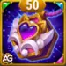 Talisman du Charme |
Talisman de la Tendresse |
|---|---|---|
 Intelligence Intelligence
|
17,537
|
15,537
|
 Agilité Agilité
|
3,522
|
3,522
|
 Force Force
|
3,612
|
3,612
|
 Santé Santé
|
820,136
|
1,001,636
|
 Attaque physique Attaque physique
|
36,389
|
34,389
|
 Attaque magique Attaque magique
|
138,277
|
112,477
|
 Armure Armure
|
38,169
|
51,969
|
 Défense magique Défense magique
|
57,712
|
55,712
|
 Ténacité Ténacité
|
2,516
|
2,516
|
 Écrasement Écrasement
|
6,509
|
6,509
|
Guide des talismans de Lian dans Hero Wars Alliance
Choisir le bon talisman peut faire la différence entre la victoire et la défaite. Contrairement aux skins, qui donnent toujours leur bonus de statistiques quel que soit celui que tu équipes, les talismans ne donnent leur bonus que lorsqu'ils sont activement équipés. Lian possède deux talismans, le Talisman du Charme et le Talisman de la Tendresse, et savoir quand utiliser chacun d'eux est essentiel pour maximiser son impact dans tous les scénarios de combat.
Talisman du Charme
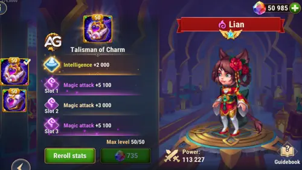
Le Talisman du Charme est le meilleur talisman global de Lian dans la plupart des situations. Sa stat principale donne +2,000 Intelligence, ce qui se traduit par un énorme bonus multi-statistiques, car l'Intelligence est la stat principale de Lian. Chaque point d'Intelligence donne trois points d'Attaque magique, un point de Défense magique et un point supplémentaire d'Attaque physique. Cela signifie que ce talisman apporte à lui seul +6,000 Attaque magique, +2,000 Défense magique et +2,000 Attaque physique rien qu'avec la stat principale.
Les trois emplacements de reroll peuvent tous obtenir Attaque magique, jusqu'à +6,600 par emplacement. Considère ces trois emplacements comme un seul reroll combiné : la seule chose qui compte est le bonus total de +19,800 Attaque magique. Pour une héroïne de Contrôle comme Lian, dont toutes les compétences offensives évoluent avec l'Attaque magique, c'est un énorme boost offensif qui renforce ses dégâts purs, ses dégâts magiques et même la réduction des dégâts de sa compétence de classe.
Pourquoi est-ce le meilleur choix ? Les formules de Balle hypnotique (50% Mag.atk. + 6,000), Feux follets (30% Mag.atk. + 3,600), Fascination (40% Mag.atk.) et Cœur brisé (15% Mag.atk.) évoluent toutes avec l'Attaque magique. Le bonus combiné de +25,800 AM apporté par ce talisman (6,000 via l'INT + 19,800 via les rerolls) augmente directement l'efficacité de toutes ses compétences de dégâts.
|
Talisman du Charme |
Stat principale totale |
|---|---|
|
Intelligence +2,000 |
+6,000 Attaque magique +2,000 Défense magique +2,000 Attaque physique |
| Slot 1 | Slot 2 | Slot 3 | Bonus total de reroll |
|---|---|---|---|
|
Attaque magique +6,600 |
Attaque magique +6,600 |
Attaque magique +6,600 |
Attaque magique +19,800 |
Talisman de la Tendresse
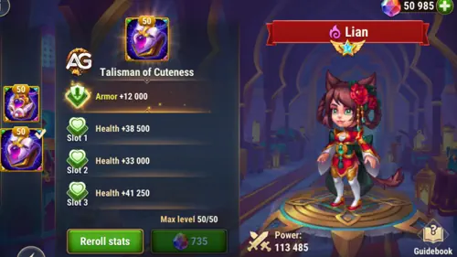
Le Talisman de la Tendresse adopte une approche défensive. Sa stat principale donne +12,000 Armure, ce qui améliore nettement la résistance de Lian aux dégâts physiques. Même si cette statistique n'améliore pas directement ses formules de dégâts ou de contrôle, elle peut l'aider à survivre plus longtemps contre des équipes axées sur les dégâts physiques.
Les trois emplacements de reroll offrent de la Santé, jusqu'à +60,500 par emplacement, soit un total de +181,500 Santé. Cela donne à Lian une réserve de points de vie bien plus importante (1,001,636 au total contre 820,136 avec le Charme), améliorant fortement sa survie.
Utilise le Talisman de la Tendresse dans des situations spécifiques, lorsque tu affrontes des équipes à fort burst physique qui risquent de tuer Lian avant qu'elle puisse lancer son ultime Enchantement. Dans la plupart des combats standards, le Talisman du Charme reste cependant le meilleur choix grâce aux énormes bonus d'Intelligence et d'Attaque magique qui renforcent tout son kit.
|
Talisman de la Tendresse |
Stat principale totale |
|---|---|
|
Armure +12,000 |
+12,000 Armure |
| Slot 1 | Slot 2 | Slot 3 | Bonus total de reroll |
|---|---|---|---|
|
Santé +60,500 |
Santé +60,500 |
Santé +60,500 |
Santé +181,500 |
Conseils d'Alexandre : Lian excelle en tant que support, donc le meilleur talisman à utiliser pour le support est le 2e avec Armure et Santé. Si tu veux une Lian à faible coût, concentre-toi uniquement sur la survie et tu pourras l'utiliser très efficacement en combat ; c'est son meilleur atout avec un investissement minimal. J'utilise le Talisman de la Tendresse et elle brille dans ma composition d'équipe.
Priorité d'amélioration des compétences de relique légendaire de Lian - Hero Wars Alliance
Les reliques renforcent les héros en leur accordant de nouvelles capacités tout en améliorant celles qu'ils possèdent déjà. Au-delà des améliorations de compétences, elles augmentent aussi deux statistiques secondaires propres à chaque héros. Les stats renforcées dépendent de la manière dont les formules de ses compétences évoluent. Voici comment prioriser les compétences de Lian pour transformer la reine de l'enchantement en une force de contrôle implacable.
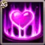
1re – Enchantement
C'est la compétence ultime de Lian et la pierre angulaire de tout son kit. Elle charme tous les ennemis et les endort pendant 7,0 secondes. Les ennemis endormis se réveillent lorsqu'ils subissent des dégâts, mais voici le détail crucial : les propres attaques de Lian ne réveillent pas les ennemis. Elle peut donc continuer à infliger des dégâts pendant que toute l'équipe adverse dort, ouvrant une énorme fenêtre à ton équipe pour placer ses compétences. Les chances de charme sont réduites si la cible est au-dessus du niveau 120.
Informations sur l'animation
- Durée : 7,0 secondes
- Délai d'animation : 1,3 secondes
- Mots-clés : Étourdissement, Contrôle, Sommeil
- Remarque : les chances de charme sont réduites si la cible est au-dessus du niveau 120
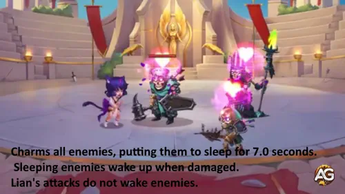
Priorité d'évolution : Très élevée – C'est la capacité signature de Lian et le sommeil d'équipe le plus puissant du jeu. La maximiser via les reliques assure une application régulière du charme même contre des ennemis de plus haut niveau. À prioriser en premier.
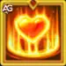
1re – Enchantement (amélioré) relique légendaire
L'amélioration légendaire transforme Enchantement, déjà puissant, en capacité dévastatrice. Les ennemis charmés ont désormais 50 % de chances de ne pas se réveiller lorsqu'ils sont attaqués. Toute ton équipe peut donc commencer à frapper des ennemis endormis sans les réveiller de manière fiable. Chaque fois que cet effet se déclenche, la probabilité diminue de 10 % : 50 % au premier coup, 40 % au deuxième, et ainsi de suite. Cela crée une fenêtre de 3 à 5 attaques sans réponse sur des cibles endormies, ce qui change complètement la donne en PvP comme en PvE.
Informations sur l'animation
- Chance initiale de ne pas se réveiller : 50 %
- Réduction par déclenchement : 10 %
- Mots-clés : Sommeil amélioré, Contrôle
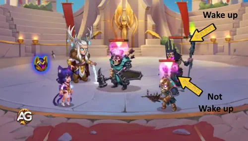
Priorité d'évolution : Très élevée – Cette amélioration est ce qui rend Lian vraiment d'élite. Pouvoir blesser des ennemis endormis sans les réveiller la transforme d'héroïne de setup en véritable condition de victoire. Combiné aux dégâts purs passifs de Cœur brisé, cela inflige une punition terrible aux ennemis charmés pendant leur sommeil.
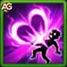
2e – Balle hypnotique
Lian lance un projectile envoûtant qui explose et inflige 5 fois des dégâts purs à chacun des héros ennemis de première ligne. Les dégâts purs ignorent l'Armure et la Défense magique, ce qui rend cette compétence redoutable même contre les adversaires les plus résistants. Les dégâts par impact sont calculés à 75,139 (50% Mag.atk. + 6,000), soit un total de 375,693 dégâts purs sur les 5 impacts.
Formule avec le Talisman du Charme
- Dégâts par impact : Dégâts purs : 75,139 (50% × 138,277 + 6,000)
- Dégâts totaux (5 impacts) : Dégâts purs : 375,693
Formule avec le Talisman de la Tendresse
- Dégâts par impact : Dégâts purs : 62,239 (50% × 112,477 + 6,000)
- Dégâts totaux (5 impacts) : Dégâts purs : 311,193
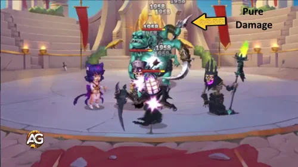
Priorité d'évolution : Élevée – C'est la principale compétence de dégâts de Lian. Les dégâts purs sont efficaces contre tous les profils, et le mécanisme en 5 coups inflige une énorme punition aux ennemis de première ligne. À améliorer après Enchantement et Conciliation.
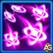
3e – Feux follets
Lian crée 5 sphères magiques et les lance sur l'ennemi le plus proche, infligeant des dégâts magiques. Cette compétence applique une pression magique constante sur une cible unique, avec un temps de recharge de 18,0 secondes. Les dégâts par sphère sont de 45,083 (30% Mag.atk. + 3,600). Même si elle est moins percutante que les dégâts purs de Balle hypnotique, sa concentration sur une seule cible aide à éliminer les menaces prioritaires.
Formule avec le Talisman du Charme
- Dégâts par sphère : Dégâts magiques : 45,083 (30% × 138,277 + 3,600)
Formule avec le Talisman de la Tendresse
- Dégâts par sphère : Dégâts magiques : 37,343 (30% × 112,477 + 3,600)
Informations sur l'animation
- Recharge : 18,0 secondes
- Délai d'animation : 0,73 seconde
- Projectiles : 5 sphères
- Mots-clés : Dégâts magiques
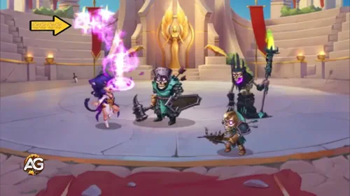
Priorité d'évolution : Élevée – Une source de dégâts complémentaire solide qui aide Lian à éliminer des cibles uniques. Les 5 sphères concentrées sur un seul ennemi peuvent achever des cibles affaiblies. À améliorer en même temps que Balle hypnotique.
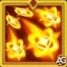
3e – Feux follets (amélioré) relique légendaire
Disponible au niveau 20 de relique légendaire. L'amélioration légendaire transforme Feux follets en dégâts purs, ignorant l'Armure et la Défense magique, et augmente la formule à 40% Mag.atk. + 600 par sphère. Chaque sphère inflige 55,911 dégâts purs avec le Talisman du Charme, pour un total de 279,555 dégâts purs sur les 5 sphères. Les dégâts purs ignorent toutes les réductions, ce qui fait que chaque coup frappe fort, quelle que soit la défense de l'ennemi.
Formule avec le Talisman du Charme
- Dégâts par sphère : Dégâts purs : 55,911 (40% × 138,277 + 600)
- Dégâts totaux (5 sphères) : Dégâts purs : 279,555
Formule avec le Talisman de la Tendresse
- Dégâts par sphère : Dégâts purs : 45,591 (40% × 112,477 + 600)
- Dégâts totaux (5 sphères) : Dégâts purs : 227,955
Informations sur l'animation
- Recharge : 18,0 secondes
- Délai d'animation : 0,73 seconde
- Projectiles : 5 sphères
- Mots-clés : Dégâts purs
- Formule par sphère : 40% Mag.atk. + 600
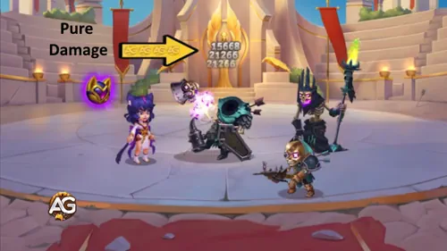
Priorité d'évolution : Moyenne à élevée – Cette amélioration renforce une compétence de dégâts utile, mais l'impact majeur de Lian en combat vient toujours d'Enchantement, de Conciliation et de sa boucle de contrôle légendaire avec Fascination et Cœur brisé. À améliorer après les reliques de contrôle les plus déterminantes.
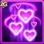
4e – Conciliation
L'outil ultime d'autodéfense de Lian. Les ennemis qui tentent de lui infliger des dégâts sont automatiquement charmés pendant 4,0 secondes. Cette capacité passive est extrêmement puissante pour une héroïne de ligne arrière : tout ennemi qui cible Lian est immédiatement endormi, ce qui la protège efficacement contre les assassins, les dégâts de zone et le focus. Les chances de charme sont réduites si le niveau de l'attaquant est supérieur à 120.
Formule avec le Talisman du Charme
- Durée du charme : Contrôle : 4,0 secondes
Formule avec le Talisman de la Tendresse
- Durée du charme : Contrôle : 4,0 secondes
Informations sur l'animation
- Durée : 4,0 secondes
- Délai d'animation : 0,5 seconde
- Mots-clés : Passif, Sommeil, Contrôle
- Remarque : les chances de charme sont réduites si le niveau de l'attaquant est supérieur à 120
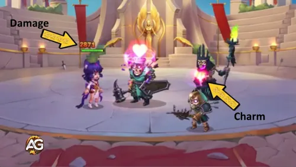
Priorité d'évolution : Très élevée – C'est cette passive qui maintient Lian en vie. En charmant tout ennemi qui la cible, elle devient pratiquement intouchable tant que le charme se déclenche. L'améliorer garantit une application fiable contre des ennemis de plus haut niveau.
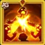
5e – Fascination (nouvelle compétence) relique légendaire
Une nouvelle compétence puissante accordée par la relique légendaire. Toutes les 14,0 secondes, Lian charme l'ennemi central et les héros proches. Le mécanisme clé est le suivant : les ennemis déjà charmés subissent des dégâts purs égaux à 55,311 (40% Mag.atk.), tandis que ceux qui ne sont pas charmés s'endorment pendant 4 secondes. Cela crée un cycle dévastateur : Lian endort les ennemis avec Enchantement, puis Fascination punit les cibles endormies avec des dégâts purs tout en recharment celles qui se sont réveillées.
Formule avec le Talisman du Charme
- Dégâts sur les ennemis charmés : Dégâts purs : 55,311 (40% × 138,277)
- Durée du sommeil (ennemis non charmés) : Contrôle : 4,0 secondes
Formule avec le Talisman de la Tendresse
- Dégâts sur les ennemis charmés : Dégâts purs : 44,991 (40% × 112,477)
- Durée du sommeil (ennemis non charmés) : Contrôle : 4,0 secondes
Informations sur l'animation
- Recharge : 14,0 secondes
- Durée : 4,0 secondes (sommeil)
- Mots-clés : Sommeil, Contrôle, Dégâts purs
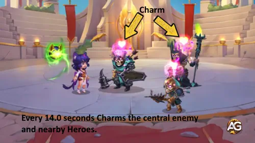
Priorité d'évolution : Élevée – Fascination crée une boucle permanente de contrôle et de dégâts qui maintient les ennemis verrouillés entre les lancements d'Enchantement. Le délai de 14 secondes assure presque une présence constante du charme sur les cibles centrales. Indispensable pour exploiter le plein potentiel légendaire de Lian.
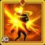
6e – Cœur brisé (nouvelle compétence) relique légendaire
L'amplificateur ultime de dégâts du kit de contrôle de Lian. Lorsque des ennemis charmés sont attaqués, Lian inflige des dégâts purs supplémentaires égaux à 20,742 (15% Mag.atk.). Cette passive se déclenche à chaque attaque portée sur un ennemi charmé. Si toute ton équipe frappe des cibles endormies, surtout grâce à l'Enchantement légendaire qui les maintient endormies, Cœur brisé se déclenche de façon répétée pour un énorme cumul de dégâts. Cela transforme Lian, simple contrôleuse, en véritable hybride contrôle-dégâts.
Formule avec le Talisman du Charme
- Dégâts bonus par attaque : Dégâts purs : 20,742 (15% × 138,277)
Formule avec le Talisman de la Tendresse
- Dégâts bonus par attaque : Dégâts purs : 16,872 (15% × 112,477)
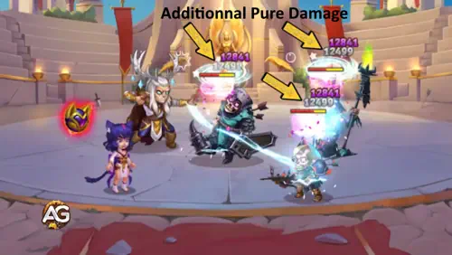
Priorité d'évolution : Élevée – Même si les dégâts par coup semblent modestes à 20,742, l'effet cumulé devient énorme lorsque toute ton équipe attaque des ennemis charmés. Avec 5 héros qui frappent, cela représente plus de 100,000 dégâts purs bonus par manche. À améliorer après Fascination pour compléter la boucle contrôle-dégâts.
Meilleur skin pour Lian dans Hero Wars Alliance
La valeur de Lian vient du fait de garder les ennemis endormis — plus elle survit, plus ton équipe a de temps pour infliger des dégâts sans opposition. Priorise d'abord les skins qui augmentent sa survie et son temps de contrôle, puis ceux qui améliorent ses dégâts.
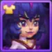
Skin de base
Le skin de base améliore l'attribut principal de Lian : l'Intelligence. Comme l'Intelligence est sa stat principale, chaque point donne trois points d'Attaque magique, un point de Défense magique et un point supplémentaire d'Attaque physique, ce qui renforce presque toutes ses compétences et améliore sa Défense magique pour une meilleure survie.
- Intelligence: +1,365
- Attaque magique (via l'Intelligence) : +4,095
- Défense magique (via l'Intelligence) : +1,365
- Attaque physique (via l'Intelligence) : +1,365
Priorité d'évolution : Très élevée – L'Intelligence est la stat la plus polyvalente pour Lian, améliorant à la fois ses formules offensives et sa Défense magique. Une Lian plus forte signifie des lancements d'Enchantement plus fiables et un temps de contrôle plus long. À prioriser en premier.
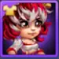
Skin romantique
Le skin romantique accorde un bonus direct en Attaque magique, qui améliore toutes les formules de dégâts de Lian — Balle hypnotique, Feux follets, Fascination et Cœur brisé. Bien que le rôle principal de Lian soit le support de contrôle de foule, une Attaque magique plus élevée augmente aussi la punition que les ennemis subissent via Cœur brisé quand ils sont charmés.
- Attaque magique : +10,650
Priorité d'évolution : Très élevée – Même si Lian brille le plus en gardant les ennemis endormis, +10.650 Attaque magique amplifie les dégâts infligés par ton équipe via les procs de Cœur brisé sur les cibles charmées. Ce skin augmente aussi le plafond de réduction de dégâts de la Compétence de Classe, améliorant indirectement la survie.
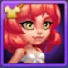
Skin plage
Le skin plage donne un énorme bonus de Santé. Pour une héroïne de support en ligne arrière dont toute la valeur repose sur le fait de rester en vie pour garder les ennemis charmés, la Santé est la stat défensive la plus importante.
- Santé : +106,645
Priorité d'évolution : Très élevée – Une Lian morte signifie zéro contrôle de foule, zéro procs de Cœur brisé, et ton équipe perd son outil de support le plus puissant. Cet énorme bonus de Santé lui permet de survivre assez longtemps pour lancer plusieurs Enchantements, maintenant toute l'équipe ennemie verrouillée pendant tout le combat. À améliorer en même temps que le skin de base et le skin romantique.
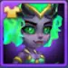
Skin démoniaque
Le skin démoniaque donne de la Défense magique, réduisant les dégâts reçus des mages ennemis. Comme la haute Intelligence de Lian en fait une cible privilégiée de Cornelius (qui frappe la plus haute INT), la Défense magique est essentielle à sa survie contre la menace la plus courante qu'elle affronte.
- Défense magique : +10,650
Priorité d'évolution : Élevée – Lian est fréquemment ciblée par le monolithe de Cornelius et d'autres menaces magiques. Une Défense magique supplémentaire augmente directement ses chances de survivre assez longtemps pour lancer Enchantement. À améliorer juste après les trois skins principaux ci-dessus.
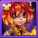
Skin solaire
Le skin solaire donne de l'Armure, augmentant la résistance de Lian aux dégâts physiques. En tant qu'héroïne de ligne arrière, elle est partiellement protégée des attaques physiques directes, mais les compétences physiques de zone et les assassins peuvent toujours l'atteindre.
- Armure : +10,650
Priorité d'évolution : Moyenne à élevée – Bien que moins critique que la Défense magique pour une mage de ligne arrière, l'Armure contribue tout de même à la survie globale de Lian contre le burst physique et l'AoE. À améliorer après le skin démoniaque.
Skin lunaire
Le skin lunaire donne de l'Écrasement, qui augmente tous les dégâts sortants (Physiques, Magiques et Purs) infligés aux ennemis en dessous de 50% de Santé. Le bonus ne s'applique pas à la perte de vie causée par les compétences alliées. Bien que l'Écrasement fonctionne avec tous les types de dégâts de Lian, son rôle principal est le support de contrôle plutôt que d'achever les cibles affaiblies.
- Écrasement : +5,920
- Formule d'activation :
(Écrasement / (Écrasement + stat principale de la cible)) × 100%
Priorité d'évolution : Moyenne – L'Écrasement peut augmenter les dégâts Purs et Magiques de Lian contre les ennemis affaiblis, mais sa valeur vient de garder les ennemis endormis, pas de les achever. Tes damage dealers bénéficient plus de l'Écrasement que Lian. À améliorer après tous les skins défensifs.
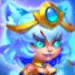
Skin astral / Skin astral+
Le skin astral donne de la Réflexion magique — une stat qui donne à Lian une chance d'esquiver complètement une attaque magique et de refléter 20% des dégâts à l'attaquant. Quand la Réflexion magique se déclenche, Lian ne subit aucun dégât de ce coup. L'amélioration Skin+ double la valeur de +2.960 à +5.920, avec le même investissement en skin stones.
- Réflexion magique : +2,960 (base) / +5,920 (Skin+)
- Fonctionne uniquement contre les dégâts magiques ; les dégâts physiques et purs ne peuvent pas être reflétés.
- Peut se déclencher lorsque Lian est Étourdie, mais ne se déclenche pas lorsqu'elle est Réduite au silence.
- Chance d'activation :
(Réflexion magique / (Réflexion magique + stat principale de l'ennemi)) × 100% - Stat principale de l'ennemi = Force, Agilité ou Intelligence, selon l'attaquant.
Le skin astral de base pourra être obtenu gratuitement à l'avenir, mais la version Skin+ est limitée dans le temps : elle n'est disponible que pendant l'Événement Skin+, et après l'événement elle ne devrait revenir que via le Coffre héroïque — ce qui peut prendre des mois pour les petits joueurs ou F2P. Même si le prix n'est pas le plus abordable, ça vaut la peine de l'acheter pendant l'événement si Lian est l'une de tes héroïnes principales, car tu dois d'abord posséder le skin astral de base pour débloquer l'achat du Skin+ avec les Pièces de l'Événement Skin+.
Priorité d'évolution : Moyenne – La Réflexion magique est une stat défensive de niche qui n'améliore ni le contrôle ni les formules de dégâts de Lian. Cependant, elle ajoute une couche d'esquive de dégâts magiques qui complète sa survie, particulièrement précieuse contre les équipes riches en magie. L'amélioration Skin+ à +5.920 rend la stat plus significative, mais investis d'abord dans les skins principaux (de base, romantique, plage, démoniaque).
Priorité d'évolution des artefacts de Lian dans Hero Wars Alliance
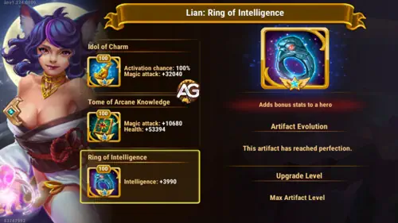
Les artefacts sont au cœur de la puissance de Lian. Comme le rôle principal de Lian est de garder toute l'équipe ennemie enchantée, priorise les artefacts qui l'aident à survivre et à maintenir le temps de contrôle, ainsi que ceux qui amplifient les dégâts de l'équipe pendant la fenêtre de sommeil.
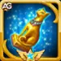
1er - Artefact d'arme : Idole du Charme
Quand Lian utilise sa compétence Enchantement en combat, cet artefact déclenche un effet accordant un bonus d'Attaque magique à toute l'équipe pendant 9 secondes. Avec 100 % de chance d'activation, c'est un boost offensif garanti à tout le groupe chaque fois que Lian endort toute l'équipe ennemie, parfait pour permettre à tes damage dealers d'exploiter la fenêtre de contrôle.
- Chance d'activation : 100 %
- Bonus d'Attaque magique (équipe) : +32,040
- Durée : 9 secondes
Priorité d'évolution : Très élevée – Cet artefact définit l'identité de support de Lian. Un bonus garanti de +32.040 Attaque magique pour toute l'équipe pendant la fenêtre de sommeil permet à tes damage dealers de punir des ennemis sans défense. Plus Lian survit et lance Enchantement, plus cet artefact apporte de valeur. À améliorer en premier.

2e - Artefact livre : Tome du savoir arcanique
L'artefact Livre fournit un mélange d'Attaque magique et de Santé. Pour une héroïne de support comme Lian, les +53.394 de Santé sont critiques — ils prolongent directement son temps de survie, ce qui signifie plus de lancements d'Enchantement et plus de procs de Cœur brisé au cours du combat. Le bonus d'Attaque magique améliore aussi le plafond de réduction de dégâts de la Compétence de Classe.
- Attaque magique : +10,680
- Santé : +53,394
Priorité d'évolution : Très élevée – La composante Santé seule en fait une priorité absolue pour une héroïne dont toute la valeur dépend de rester en vie. Les +10.680 AM sont un bonus bienvenu qui améliore les dégâts de Cœur brisé et le plafond de la Compétence de Classe. À améliorer en même temps que l'artefact d'arme.

3e - Artefact anneau : Anneau d'Intelligence
L'anneau améliore directement la stat principale de Lian, l'Intelligence. Comme chaque point d'Intelligence donne de l'Attaque magique, de la Défense magique et de l'Attaque physique, c'est l'artefact le plus polyvalent pour renforcer à la fois son attaque et sa résilience défensive — surtout les +3.990 de Défense magique qui l'aident à survivre face à Cornelius et d'autres menaces magiques.
- Intelligence: +3,990
- Attaque magique (via l'Intelligence) : +11,970
- Défense magique (via l'Intelligence) : +3,990
- Attaque physique (via l'Intelligence) : +3,990
Priorité d'évolution : Élevée – L'anneau offre un boost équilibré d'attaque et de défense via l'Intelligence. Les +3.990 de Défense magique provenant de l'Intelligence aident Lian à survivre face à Cornelius, tandis que l'Attaque magique améliore le passif Cœur brisé. À améliorer après les artefacts d'arme et de livre.
Priorité d'évolution des glyphes de Lian
Les glyphes fournissent de la puissance brute en statistiques qui maintient Lian en vie et efficace. Comme son rôle principal est le support de contrôle de foule — garder les ennemis charmés et endormis — les glyphes de survie sont la priorité absolue, suivis des stats qui améliorent ses formules de dégâts.
1er glyphe - Santé
La Santé est le glyphe le plus important pour Lian. Toute sa valeur repose sur le fait de survivre assez longtemps pour lancer Enchantement et verrouiller l'équipe ennemie. Si elle tombe avant son ultime, l'équipe perd son contrôle de foule le plus puissant, l'amplification de dégâts de Cœur brisé et le buff d'équipe de l'Idole du Charme. Un pool de vie massif lui permet de livrer plusieurs cycles de sommeil au cours du combat.
Statistiques au niveau 80 : +122,800 Santé.
Priorité d'évolution : Très élevée (1re au total) – Une Lian morte n'apporte aucun contrôle de foule. Aucun autre glyphe n'approche l'impact de survie de +122.800 Santé pour une héroïne dont tout le kit tourne autour du fait de rester en vie et de lancer Enchantement à répétition.
2e glyphe - Attaque magique
L'Attaque magique améliore toutes les compétences de dégâts du kit de Lian — Balle hypnotique (50% AM), Feux follets (30% AM), Fascination (40% AM) et Cœur brisé (15% AM). Elle augmente aussi le plafond de réduction de dégâts de la Compétence de Classe, ce qui aide indirectement à la survie. Bien que Lian soit une héroïne orientée support, une Attaque magique plus élevée rend la punition via Cœur brisé significativement plus forte.
Statistiques au niveau 80 : +12,850 Attaque magique.
Priorité d'évolution : Très élevée (2e au total) – La stat principale de scaling pour toutes les formules de dégâts et le plafond de la Compétence de Classe. À améliorer après la Santé pour s'assurer que Lian survit et inflige des dégâts pertinents pendant le sommeil des ennemis.
3e glyphe - Défense magique
La Défense magique réduit les dégâts que Lian subit des mages ennemis et des compétences magiques. Comme sa haute Intelligence en fait une cible privilégiée de Cornelius (qui frappe la plus haute INT), la Défense magique est cruciale pour survivre à ses monolithes dévastateurs et autres menaces magiques.
Statistiques au niveau 80 : +12,850 Défense magique.
Priorité d'évolution : Élevée (3e au total) – Protection essentielle contre les héros anti-INT qui ciblent spécifiquement Lian. À améliorer après la Santé et l'Attaque magique pour équilibrer sa survie.
4e glyphe - Armure
L'Armure réduit les dégâts physiques subis par Lian. Même si elle se tient en ligne arrière et reste partiellement protégée des attaques physiques directes, les compétences physiques de zone et les assassins peuvent toujours l'atteindre. Chaque couche défensive compte pour une héroïne dont la survie équivaut à du contrôle de foule pour toute l'équipe.
Statistiques au niveau 80 : +12,850 Armure.
Priorité d'évolution : Moyenne à élevée (4e au total) – Un glyphe défensif solide qui complète la Santé et la Défense magique. À améliorer après la Défense magique pour compléter la résistance physique de Lian.
5e glyphe - Intelligence
L'Intelligence est la stat principale de Lian. Monter ce glyphe apporte un bonus polyvalent — chaque point donne de l'Attaque magique, de la Défense magique et de l'Attaque physique. Il offre un mélange équilibré d'attaque et de défense, bien que chaque gain individuel soit inférieur à celui des glyphes dédiés ci-dessus.
- Intelligence: +2,110
- Attaque magique (via l'Intelligence) : +6,330
- Défense magique (via l'Intelligence) : +2,110
- Attaque physique (via l'Intelligence) : +2,110
Priorité d'évolution : Moyenne (5e au total) – L'Intelligence offre un boost de stats polyvalent, mais les glyphes dédiés de Santé, Attaque magique, Défense magique et Armure offrent des valeurs individuelles plus élevées. Les +2.110 de Défense magique supplémentaires via l'Intelligence sont un bonus de survie appréciable. À monter en dernier parmi les glyphes.
Comment contrer Lian dans Hero Wars Alliance
La domination de Lian en contrôle de foule peut être neutralisée par des héros qui dissipent les effets ou ciblent sa haute Intelligence. Voici les héros capables de stopper sa puissance enchanteresse.
Nebula

Nebula est un excellent contre à Lian. Sa compétence Équilibre dissipe tous les effets de contrôle sur deux alliés.
Cornelius

Cornelius cible directement l'ennemi ayant la plus haute Intelligence, et Lian, avec ses 17,537 d'Intelligence via le Talisman du Charme, est presque toujours cette cible. Cornelius fait tomber un monolithe qui inflige des dégâts proportionnels à l'Intelligence de la cible. Comme Lian cumule énormément d'Intelligence via ses skins, glyphes et artefacts, les dégâts de Cornelius contre elle sont dévastateurs. Un seul monolithe bien placé peut l'éliminer avant qu'elle ne lance Enchantement.
Synergies de Lian dans Hero Wars Alliance
Le contrôle de foule basé sur le charme de Lian crée des synergies dévastatrices avec les héros capables d'exploiter des ennemis contrôlés ou de profiter de combats prolongés. Voici ceux qui fonctionnent le mieux avec son kit d'enchantement.
Satori

Satori place des marques de Feu du Renard sur les ennemis, qui explosent lorsque la cible gagne ou dépense de l'énergie. L'Enchantement de Lian endort toute l'équipe adverse, et quand les ennemis se réveillent puis utilisent immédiatement leurs compétences, dépensant ainsi leur énergie, toutes les marques de Satori explosent en même temps pour infliger des dégâts massifs. Le timing entre contrôle et burst est excellent : Lian dicte le rythme pendant que Satori porte le coup fatal.
Amira

Combinée aux dégâts purs bonus de Cœur brisé sur les ennemis charmés, la combinaison Lian + Amira crée des dégâts multicouches incessants contre des cibles impuissantes.
Folio

Folio profite du contrôle de foule appliqué aux ennemis et gagne des avantages lorsque ceux-ci subissent des effets de CC. Le sommeil d'équipe de Lian via Enchantement déclenche régulièrement les mécaniques de synergie de Folio, lui permettant de maximiser ses dégâts ou son utilité pendant que les ennemis restent charmés et impuissants. À eux deux, ils créent une boucle dans laquelle le contrôle de Lian déclenche les pics de puissance de Folio.
Miu

Miu crée des orbes de rêve qui synergisent avec les héros de contrôle basés sur le sommeil. Les effets de charme de Lian préparent parfaitement les mécaniques de rêve de Miu : les ennemis endormis sont plus vulnérables aux détonations de ses orbes. Ensemble, elles forment une véritable équipe de rêve qui combine contrôle de foule et burst, piégeant les ennemis dans un cycle inéluctable de sommeil et de destruction.
Conclusion
Lian s'impose comme l'une des héroïnes de Contrôle les plus puissantes et dominantes de Hero Wars Alliance. Sa combinaison unique de sommeil sur toute l'équipe, de défense réactive par charme, de dégâts purs qui ignorent toutes les défenses et de compétences légendaires créant une boucle indestructible de contrôle et de dégâts fait d'elle la spécialiste ultime du contrôle de foule.
Ses reliques légendaires la transforment d'une forte contrôleuse en une arme stratégique essentielle. L'Enchantement amélioré, qui permet aux ennemis de rester endormis même lorsqu'ils sont attaqués, le charme de zone répété de Fascination toutes les 14 secondes et les dégâts purs passifs de Cœur brisé à chaque coup sur un ennemi charmé créent des couches de contrôle et de dégâts qui s'accumulent pendant tout le combat.
Dans la plupart des combats, mise sur le Talisman du Charme, priorise Enchantement et Conciliation pour les améliorations de compétences et investis dans l'Intelligence et l'Attaque magique via les skins, artefacts et glyphes. Avec le bon build, Lian forcera tes ennemis à se rendre et transformera chaque combat en une fête du sommeil à sens unique.
Découvrez de nouvelles compétences avec nos guides recommandés !


Regardez notre vidéo guide sur la relique légendaire de Lian !
Laissez votre avis !
Avez-vous aimé notre guide de Lian pour Hero Wars Alliance ? Y a-t-il quelque chose que vous n'avez pas compris ou pour lequel vous aimeriez suggérer des modifications ? Nous vous invitons à participer à notre section de commentaires sur le blog Alexandre Games. N'hésitez pas à partager votre opinion, poser vos questions et envoyer vos suggestions.
Cliquez sur le bouton ci-dessous pour commencer :